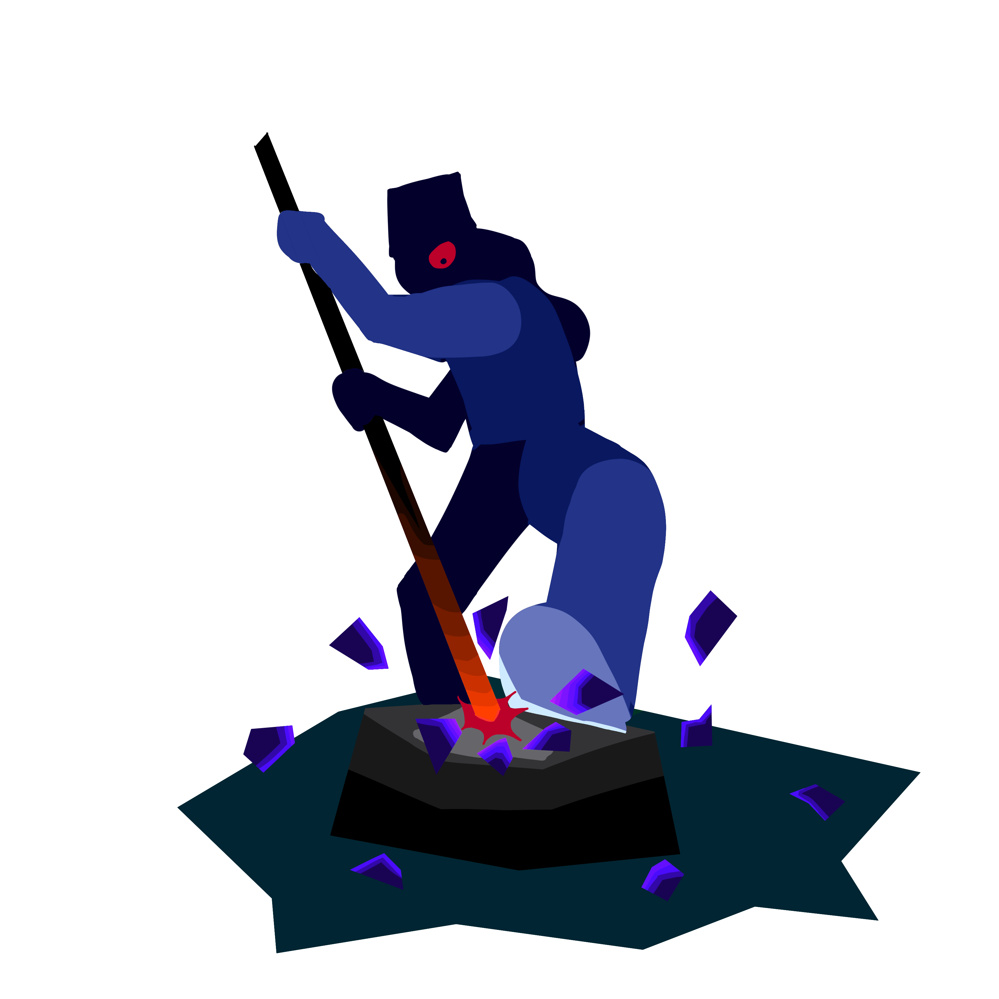
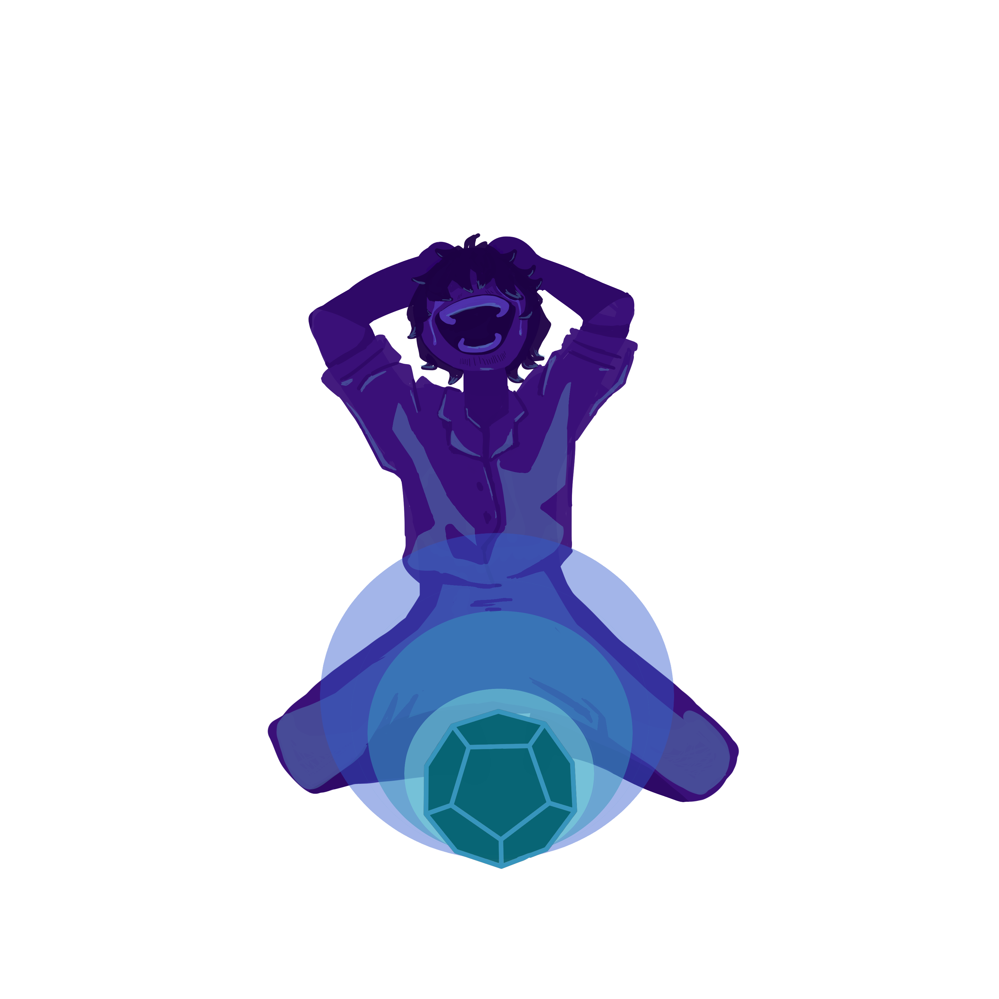
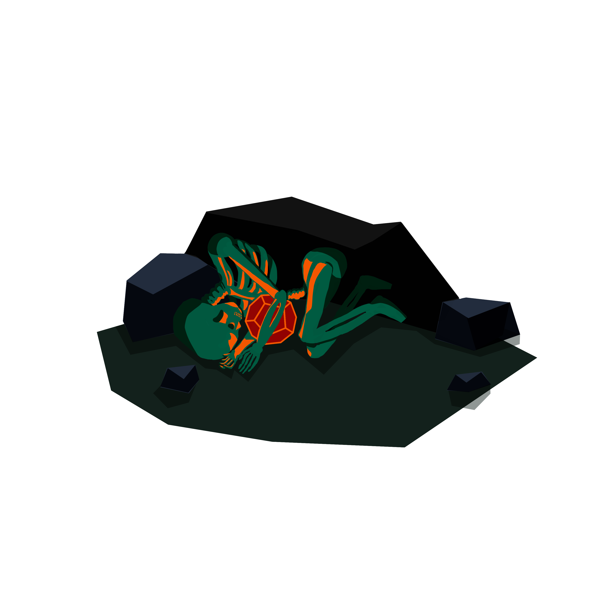

Narrativa
Quienes somos
Sobre el proyecto
Contáctanos
La estrella que fragmentó el tiempo
El eco ancestral se funde con la chispa de la tecnología, creando artefactos místicos en un rito de transformación etérea.
Cuando las hojas crujen bajo pies descalzos y el masticar de coca suena cada vez más fuerte, uno o dos pulsos de energía son suficientes para llamar la atención de cualquier camínate, así, luego del irresistible llamado, recoger el brillante pedazo de obsidiana de la tierra es la única opción.
Ojos curiosos se reúnen alrededor de brillantes espejos de obsidiana que, incluso para los menos interesados, parece contener todas las estrellas del cielo nocturno. Pero ellos no obtendrán nada más que una bella vista, ya que no tienen la disciplina ni la sensibilidad espiritual para escuchar. De esta forma la obsidiana no tiene nada para ofrecerles.
Los Mamu la llamaron Tutúmula, y vieron dentro de ella el paso de la vida.
El interés siempre es cegador los primeros meses, pero pocos se dedicarán a aprender su lenguaje. Los que lo logren llegarán a ver los secretos de sus antepasados y de la naturaleza, verán reinos surgir y caer, verán guerras y nacimientos, verán el polvo de las estrellas y la oscuridad del universo. Pero eso es demasiado, incluso para las mentes de los hermanos mayores.
Lo siguiente son discusiones, no importa cuánto lo intenten incluso cuando logran llegar más lejos que cualquiera a todo lo que la Tutúmula les puede ofrecer no pueden compartir el conocimiento que recibieron, después de todo ¿cómo podrías describir las palabras de la lluvia?, y a nadie le gusta estar confundido así que lo enmascaran la ignorancia con escepticismo y el miedo con odio.
Pero esta vez es diferente, porque en vez de devolverla completa a la naturaleza el Mamu decide quebrarla en 12 pedazos que tira en el rio para cruzar el país. Este Mamu vio el patrón reflejado en la obsidiana de todos antes que él y al ver como la inestabilidad de su pueblo solo contribuye a este, sabe que es su deber detenerlo.

Viajar en pedazos es probablemente como estirar tus brazos y piernas cuando estas cayendo, no puedes precisamente sentirlos, pero sabes que siguen ahí. Hasta que de pronto sientes como toman tu mano y te das cuenta de que todo el tiempo estuviste gritando por ayuda.
Esta vez también es diferente. El joven no tiene una comunidad a la que llegar a pesar de estar rodeado de tantas personas, y con una mirada curiosa pero demandante de respuestas, observa las constelaciones incompletas reflejadas en un pedazo del todo. Y cuando el joven logra encontrar otro conjunto de estrellas es recompensado con un aumento en la energía a su alrededor que, asume acertado, significa está haciendo lo correcto.
Ahora sabiendo qué buscar, el joven solo demora un par de décadas en encontrar el resto de las estrellas. Y estar completa es, tal vez, como entrar a una habitación tibia luego de una lluvia torrencial. Con la energía más fuerte que nunca, gracias al sentimiento de satisfacción al estar junta de nuevo, la materia se dobla junto a ella; pero el joven no está viendo nada a su alrededor, no puede, sus ojos cubiertos en lágrimas y cerrados por las carcajadas que rebotan en la habitación.
Por lo diferente de toda la situación, no debería ser una sorpresa el saber que el joven estuvo estudiando profundamente para lograr escuchar y comprender todo el conocimiento que la obsidiana le ofrece y, de pronto, fue todo el tiempo que paso estudiando las estrellas incompletas o tal vez fue tener más obsesión que nadie antes, pero el joven logro llegar hasta el polvo de estrellas.

Pero, el polvo es engañoso. Sí está muy espeso a tu alrededor no podrás ver más de un par de pasos adelante y nunca sabrás con qué vas a tropezar y a caer. Porque a pesar de ver la realidad como es frente a sus ojos, la mente solo puede trabajar en prejuicios y perspectivas limitadas.
Por lo que cuando el joven salió gritando a cerca de lo que había descubierto, contándole a todos la verdad que él creó, nadie dio crédito a sus palabras y lo que lo hicieron solamente interpretaron lo que quisieron; causaron disturbios y peleas, pánico y curiosidad, muchos pidieron ver dentro de la obsidiana, pero el joven los rechazo viendo sus ojos llenos de codicia, después de todo nadie más podría entender.
Así que bendecido con más conocimiento que cualquier otro hombre y celoso de que alguien más descubriera su verdad inventada, se encerró en una cueva abrazando la obsidiana hasta que sus brazos se convirtieron en huesos y la tierra reclamo su cuerpo, devolviendo la obsidiana a la naturaleza, esperando hasta que otra alma se acerque al escuchar su canto.
